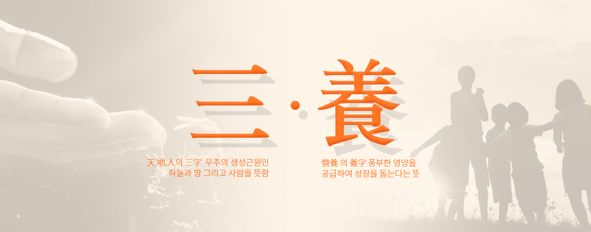
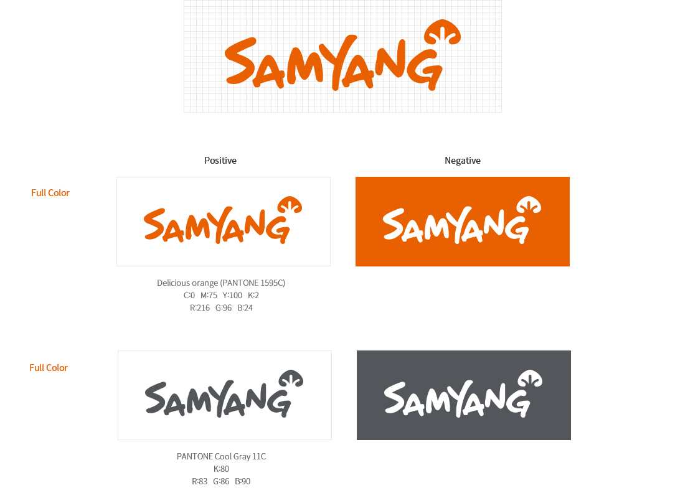

삼양식품
-
'라면' 에 대한 열정과 신념으로 국내 식품 산업에 큰 획을 긋다 1961년 창업한 삼양식품은 ‘정직과 신용’을 추구하는 기업으로 식품산업 외길을 걸어 왔습니다.
식품으로 인간 백세시대를 열겠다는 창업주의 혼이 담긴 개척정신은 삼양식품이 국민들에게
신뢰받는 기업이 되는 밑거름이 되었습니다.
삼양식품은 열정과 도전으로 안전하고 건강한 먹거리를 만들기 위해 최선의 노력을 다하겠습니다.
1963년 9월, 국내 최초로 라면 생산 유일한 주식이었던 쌀과 잡곡, 그것마저도 부족하여 허리띠를 졸라 매야했던 1960년대.
식량난 극복을 위해 삼양식품은 1963년 국내 최초로 ‘삼양라면’을 생산했고
이후 라면은 제2의 주식으로 자리매김하게 되었습니다.식생활개선 70년대 초 주식의 자급화 전망이 뚜렷해지고 국가경제가 급성장을
거듭하여 기아로부터 해방되자 삼양식품에서는 식생활 개선에
앞장섰습니다.
대관령 고원 일대에 600만평의 산지를 개발해서 초지를 조성,
산지축산을 진흥시킴으로써 식생활의 선진화에 힘써 국민보건 향상에 큰 역할을 담당했습니다.대관령 삼양목장의 건립과 좋은 재료를 써야한다는 믿음 대관령 삼양목장은 삼양식품의 주요 원료 공급원 역할을 하여
라면 스프용 쇠고기 등 육류를 자급하였고
맑은 공기와 드넓은 초지에서 젖소를 사육하여
고품질의 유제품을 생산할 수 있었습니다.
종합 식품 기업 삼양식품은 제품의 고급화와 맛과 영양의 차별화를 위해 질 높은 천연원료를 사용하여
한국적이고 전통적인 맛을 지닌 우수식품을 공급하고 있습니다.
삼양식품은 식품관련 자회사와 함께 하고 있습니다.
삼양내츄럴스는 라면스프의 원료인 파, 마늘, 참깨, 고추, 해산물 등 각종 농수산물을 안정적으로 수급하고 있으며,
삼양목장은 강원도 대관령 일원 해발 850m~1,400m의 광활한 목장에서
신선한 쇠고기와 우유를 공급하고 있습니다.
삼양식품은 국내 기관(HACCP) 뿐만아니라 세계적 공인기관 (KOLAS, ISO22000, HALAL)의 인증을 받아
소비자가 믿고 드실 수 있도록 철저한 품질관리 체계를 구축하였습니다.K-Food를 선도하는 삼양식품 특히 최근 중국, 동남아시아 등에서
‘불닭볶음면’이 폭발적인 인기를 끌고 있으며,
K-Food를 선도하는 주요 브랜드로 자리잡았습니다.
불닭볶음면이 글로벌 브랜드로 더욱 성장할 수 있도록
삼양식품 대표 캐릭터 ‘호치’를 활용한 캐릭터 마케팅과
불닭시리즈 제품들의 현지 홍보∙마케팅을 강화하고 있습니다.
※ 주요 수출국
* 면/스낵
- 미 주 : 미국, 캐나다, 아르헨티나, 파라과이, 칠레
- 아시아 : 중국, 일본, 싱가포르, 인도네시아, 말레이시아, 홍콩, 베트남
- 유 럽 : 스웨덴, 영국, 독일, 스페인, 네덜란드
- 오세아니아 : 호주, 뉴질랜드, 미크로네시아, 사모아
- 중 동 : 사우디아라비아, 바레인, 아랍에미리트
* 유제품 - 아시아 : 중국 -
삼양식품은 한국을 대표하는
글로벌 종합식품기업으로 성장해 가겠습니다.삼양식품은 1961년 창업 이래 식품사업에만 전념해 왔습니다. 특히 맛과 건강을 최우선으로 한 제품을 생산하여 한국 식품산업과 식문화의 발전에 앞장서고 있습니다. 우리나라에서 처음으로 라면을 출시해 쌀 중심의 식습관을 변화시키며 60년대 식량난 해결에 기여했고, 현재는 한국적인 매운맛을 담은 불닭브랜드로 전 세계인이 함께 즐길 수 있는 새로운 식문화를 창출하여 K-FOOD 열풍을 선도하고 있습니다.
삼양식품은 또한 우리 사회와 동반성장하기 위한 노력을 지속해 오고 있습니다. '기업의 이윤은 사회에 환원되어야 한다'는 故 전중윤 삼양식품 창업주의 뜻에 따라 70년대부터 사회공헌을 위한 재단을 설립해 현재까지 꾸준한 기부활동과 장학 사업을 전개하고 있습니다. 이와 함께 공정과 상생의 가치를 준수하고 친환경 경영, 투명 경영을 적극 실천하여 ESG 경쟁력을 강화함으로써 다양한 경제적•사회적 가치를 창출해 나가고자 노력하고 있습니다.
삼양식품은 앞으로 수십 년의 식품 제조 노하우를 바탕으로 최상의 품질과 차별성을 갖춘 제품을 앞세워 한국을 대표하는 글로벌 종합식품기업으로 성장해 나가겠습니다. 무엇보다도 사회에 긍정적인 영향을 주는 기업으로서 모든 사람들이 건강하고 행복한 세상을 만들어 가는데 앞장설 것임을 약속드립니다.
삼양식품에 대한 고객 여러분의 변함없는 믿음과 사랑에 감사드리며, 앞으로도 고객과 함께 성장하는 모습을 기대해 주시기 바랍니다.
감사합니다.
삼양식품 대표이사 김정수 -
- 슬로건 delicious together 고객에 대한 감사와 사랑
- 비전
Excellence in Taste 최고의 맛/ 멋있는 기업
삼양식품은 최고의 맛을 지향하며, 궁극적으로 멋있는 삶을 목표로 합니다. - 미션
Re-Creation 신사업/제품개발의 창의성
Re-Vitalization 업무추진과 조직문화의 도전정신 - 가치체계
Honesty & Integrity 정직과 신용
창립이래 지켜온 기업정신을 계승합니다.
삼양식품의 창업정신은 정직과 신용입니다.
정직과 신용은 故 전중윤 명예회장께서 삼양식품을 통해 영원히
이루고자 했던 경영의 가치입니다.정직은 인간이 생활해 나감에 있어서 가장 중요한 덕목의 하나입니다.
더욱이 불특정 소비자를 상대로 하여 기업을 운영함에 있어서는
정직으로 임해야 하며 생산 제품 하나가 정직한 마음씨의 결정이 되어야 하고
거래관계에 있어서도 정직이 기초되어야 합니다.
이에 삼양식품은 정직과 신용을 통한 기업의 육성과 임직원 자신의 자아발전을
실현해가고 있습니다. -
삼양식품의 상호
삼양식품의 상호는 故 전중윤 명예회장이 직접 제정했으며 ‘삼양’은 다음과 같은 뜻을 간직하고 있습니다.
CI매뉴얼
삼양식품의 로고는 자연스럽고 운율감 있는 로고타입과 삼양의 창립철학과 오랜 전통을 거쳐 일구어진 신화를 상징하는 아이콘으로 구성되었습니다.
삼양식품의 색상은 따뜻함, 에너지, 그리고 맛을 의미하는 "Delicious Orange"입니다.
"Delicious Orange"는 세련된 중채도 색상으로써 사람과 자연을 생각하는 비전을 반영한 것입니다.
 -
History
- 2020 ~ 현재
- 2000 ~ 2010
- 1980 ~ 1990
- 1960 ~ 1970
2021 12 - 소비자중심경영(CCM) 인증 획득
- '3억불 수출의 탑' 수상 (2021년도 제58회 무역의 날)
- 가족친화기업 인증 획득
2021 10 - 중국 현지 판매법인 '삼양식품상해유한공사(三養食品上海有限公司)' 설립
- 한국기업지배구조원 평가서 ESG 통합 등급 A 획득
2021 09 - 업계 최초 점자 제품 출시(큰컵로제불닭볶음면)
2021 08 - 미국 현지 판매법인 '삼양아메리카주식회사(SAMYANG AMERICA.INC.)' 설립
2021 06 - 임직원 복리후생을 위한 <ESG 복지기금> 출연
2021 04 - ESG 경영 노사 공동선언
- 이크레더블과 협력회사 ESG경영 지원을 위한 업무협약 체결
2021 03 - ESG위원회, 감사위원회, 보상위원회, 사외이사후보추천위원회 신설
- 녹색인증 받은 친환경 패키지 적용 (사또밥, 맛있는라면 비건)
- 맛있는라면 비건, 한국비건인증원에서 비건 인증 획득
2020 12 - 스낵 사또밥, 한국비건인증원에서 비건 인증 획득
- 세계일류상품 라면 품목 생산기업으로 선정 (산업통상자원부 주관, 코트라 인증)
2020 10 밀양 신공장 착공 2020 07 원주공장, 안전보건환경경영시스템 국제 표준 ISO 45001 & ISO 14001 동시 획득 2019 12 - 불닭브랜드, '브랜드 탑' 수상 (2019년도 제56회 무역의 날)
- 경상남도, 밀양시, 한국주택토지공사와 공장 설립을 위한 투자 협약(MOU) 체결
2019 10 중국 '유베이'와 총판 계약 연장 2019 07 불닭브랜드 매출 1조 돌파 2019 06 태국 '시노 퍼시픽'과 판매 계약 체결 2019 01 - 중국 '유베이'와 총판 MOU 체결
- 일본 현지 판매법인 ‘삼양 재팬(SAMYANG JAPAN)' 설립
2018 12 '2억불 수출의 탑' 수상 (2018년도 제55회 무역의 날) 2018 06 베트남 유통업계 1위 '사이공 쿱' 그룹과 MOU 체결 2018 03 -
아랍에미리트 ESMA 할랄 인증 획득 (7개 제품)
불닭볶음면, 큰컵불닭볶음면, 컵불닭볶음면, 치즈불닭볶음면,
큰컵치즈불닭볶음면, 컵삼양라면(비프맛), 컵삼양라면(치킨맛)
2017 12 -
'1억불 수출의 탑' 수상 (2017년도 제54회 무역의 날)
전인장 대표이사 회장, 동탑산업훈장 수훈 김정수 사장, 산업통상자원부장관 표창 수상
2017 09 -
국내 라면업계 최초 인도네시아 MUI 할랄 인증 획득 (6개 제품)
불닭볶음면, 큰컵불닭볶음면, 컵불닭볶음면, 치즈불닭볶음면,
큰컵치즈불닭볶음면, 쿨불닭볶음면
2016 09 삼양식품 온라인 쇼핑몰 '삼양맛샵' 오픈 2015 09 삼양내츄럴스, 냉동식품 전문업체 '새아침'인수 2014 03 한국이슬람중앙회 KMF 할랄 인증 획득 (7개 제품) 삼양라면, 김치라면, 육개장, 수타면,
불닭볶음면, 큰컵불닭볶음면, 컵불닭볶음면2014 01 대관령 삼양목장 '2018 평창 동계올림픽'관광 특구 지정 2013 09 국내 최초『구운면』출시 2012 04 『불닭볶음면』출시 2012 03 삼양목장 유기축산 인증 2011 11 삼양목장 유기초지 인증 2011 09 삼양식품㈜ 창립50주년 2011 08 제주우유 인수 2011 04 ㈜삼양THS 설립 (장애인 자회사형 표준 사업자) 2010 08 외식업체 『호면당』 인수 2010 05 故 전중윤 명예회장 국민훈장 동백장 수상 2010 03 故 전중윤 회장 명예회장 추대 및 전인장 회장 취임 2009 10 원주공장 위해요소 중점관리기준(HACCP)인증 2008 02 식품연구소 국제적공인시험기관(KOLAS) 인증 2005 03 화의종결 2001 07 대관령 유기질 비료공장 완공
대관령 유기질 비료 생산2000 11 故 전중윤 명예회장 월남장 수상 1998 09 화의인가 1997 08 대법원 우지사건 무죄판결 1997 02 월곡사옥 준공
종로사옥에서 월곡사옥으로 이전1990 05 『삼양요거트』, 『삼양요구르트』
발효유 국내 최초로 KS마크 획득1990 03 삼양식품㈜로 상호 변경 1990 03 문막 인쇄공장 기공 1989 12 대한민국 최초의 『쌀라면』 출시 1989 11 우지사건 발생 1989 05 중국 청도에 『청도삼양식품유한공사』 설립 1989 02 삼양식품㈜ 원주공장 준공 1987 12 『삼양카네이션』 아이스크림 국내 아이스크림 최초
KS 마크 획득1987 03 『삼양양조간장』 간장업계 최초 KS마크 획득 1986 09 『사또밥』 출시 1985 05 故 전중윤 명예회장 금탑산업훈장 수상 1982 05 삼양유지사료, 삼양골드식용유 KS마크 획득 1981 01 대한민국 최초 떠먹는 요구르트 『요거트』 출시 1980 12 삼양 유가공공장 준공
유가공사업 진출1980 07 미국 현지법인 삼양 USA 설립 1978 10 의료법인 대화의원 개원 1978 10 故 전중윤 명예회장 은탑산업훈장 수상 1978 01 삼양유지사료㈜ 설립 1976 02 삼양베이커리탱크터미널, 저장능력 7000톤 탱크 공급 1975 10 『삼양 오스트렐리안 치즈』 시판 1975 09 삼양식품체인㈜ 설립 1973 10 『장유류』 생산개시 1973 03 故 전중윤 명예회장 제17회 세금의 날에 대통령 산업 훈장 수상 1972 05 대관령 삼양목장 개척 시작 1972 03 대한민국 최초의 컵라면 『삼양 컵라면』 출시 1972 02 대한민국 최초의 라면과자 『뽀빠이』 출시
삼양축산㈜ 설립1971 02 익산공장 준공, 『쇠고기면』 출시 1970 09 『카레라면』 출시 1970 05 『냉면』 출시 1970 03 『짜장면』 출시 1970 07 이건교육재단 설립 1969 10 부산공장 착공 1969 07 『칼국수』 생산 개시 1969 07 故 전중윤 명예회장 동탑산업훈장 수상 1969 대한민국 최초의 라면 수출 (베트남) 1965 10 삼양식품공업주식회사로 상호 변경 1963 09 대한민국 최초의 라면 『삼양라면』 출시 1961 10 삼양공업주식회사로 상호 변경 1961 08 삼양제유주식회사 창립